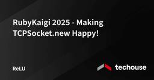

Techouse Developers Blog
https://developers.techouse.com/
テックハウス開発者ブログ｜マルチプロダクト型スタートアップ｜エンジニアによる技術情報を発信｜SaaS、求人プラットフォーム、DX推進
フィード

RubyKaigi 2025 - Making TCPSocket.new Happy!
Techouse Developers Blog
本記事では、RubyKaigi 2025の2日目に行われたMisaki Shioi(@coe401_)さんによるセッション、「Making TCPSocket.new "Happy"!」について紹介させていただきます。が、その前に前提知識として Happy Eyeballs について軽く紹介します。1981年から長く使われてきた IPv4 ではアドレス数の枯渇が問題となっており、その解決策として1990年代から IPv6 の普及が進められています。日本ではユーザー側の回線で IPv6 の普及が進んでおり、報道によれば2024年2月に IPv6 普及率が50%に達したところです。
1日前
RubyKaigi 2025 - From C extension to pure C: Migrating RBS (Day2)
Techouse Developers Blog
2日目はpicorubyやビルドシステムに関する話を中心に聞きました！ その中でも自分が紹介したいのは、Alexander MomchilovさんによるFrom C extension to pure C: Migrating RBSというセッションです。本記事では、その内容をまとめてご紹介します。
3日前
RubyKaigi 2025 - Ruby Taught Me About Encoding Under the Hood
Techouse Developers Blog
本記事では、1日目の Mari Imaizumi (@ima1zumi)さんによるKeynote セッション、Ruby Taught Me About Encoding Under the Hoodについて紹介させていただきます。今回紹介するセッションの登壇者はハンドルネーム@ima1zumiとして活動し、Stores,inc に在籍されているMari Imaizumi さんです。(以後ブログ内では @ima1zumi さん と呼ばせていただきます)2025年3月にRubyコミッターに就任し、主にIRB・Relineのメンテナンスをなさっています。本セッションでは @ima1zumi さんが実際に出会って対処した issue や Unicodeのアップグレード作業の内容について具体的な事例を交えて紹介します。
3日前

RubyKaigi 2025 に参加しました
Techouse Developers Blog
2025年4月16日-18日に開催された RubyKaigi 2025 に参加してきました。ということで、RubyKaigi 2025 に3日間参加してきたレポートをお届けします。今年の RubyKaigi 2025 は、愛媛県松山市の愛媛県県民文化会館で開催されました。会場は道後温泉や松山城にもとても近く、Techouse 参加者の全員が夜は毎日温泉に行ってました。
15日前
RubyKaigi 2025 Automatically generating types by running tests (Day1)
Techouse Developers Blog
Rubyは動的型付け言語であり、型宣言に該当する文法が存在しません。一方で、Rubyで型を扱う手段が一切ないわけではなく、型宣言を記述するための言語であるRBSや、RBSを用いて型検査をするgemであるSteepなどが開発されています。RBS::Traceは、この発表のスピーカーである@sinsokuさんによって開発されているgemで、テストを実行することで型宣言を自動で記述してくれるツールです。
15日前
RubyKaigi 2025 - Speeding up Class#new (Day2)
Techouse Developers Blog
Rubyではオブジェクト指向プログラミングの基本として、Class#newメソッドを使ってインスタンスを作成します。この基本的かつ頻繁に使用されるメソッドの最適化は、Ruby全体のパフォーマンス向上に直結します。この記事ではRuby 3.5（4.0）にてClass#newがどのようにして高速化されるかについて解説します。
18日前
RubyKaigi 2025 - On-the-fly Suggestions of Rewriting Method Deprecations (Day3)
Techouse Developers Blog
Masato Ohba(@ohbarye)さんによる「On-the-fly Suggestions of Rewriting Method Deprecations」についてご紹介します。このセッションでは、開発者なら誰もが経験する「メソッド非推奨化」に伴うコード修正を、もっと楽にするためのツールとその仕組みが提案されていました。
18日前
RubyKaigi 2025 - Improvement of REXML and speed up using StringScanner (Day2)
Techouse Developers Blog
本記事では、RubyKaigi 2025 2 日目の NAITOH Jun さんの講演 Improvement of REXML and speed up using StringScanner の中で触れられていた、REXML が v3.2.7 で遅くなった件について、その原因と解決までの流れを調査した結果をご紹介します。個人のメモのような内容になってしまいますが、同じ疑問を抱いた人の理解の一助になれば幸いです。
19日前
RubyKaigi 2025 - Ruby's Line Breaks (Day1)
Techouse Developers Blog
本記事では、RubyKaigi 2025 1日目のYuichiro Kaneko (@spikeolaf) さんによるセッション、「Ruby's Line Breaks」について紹介させていただきます。Rubyを書いていると、どこで改行できるのか、迷うことがあると思います。例えば、以下の2つのコードを見てみましょう。
19日前
RubyKaigi 2025 - コード懇親会 に参加しました
Techouse Developers Blog
コード懇親会 はアンドパッド様とクリアコード様が主催する、通常の懇親会とは一味違ったコンセプトのイベントです。一般的な懇親会では参加者同士が飲食しながら会話を楽しむ形式が多いですが、コード懇親会はその名の通り「コード」を軸にした交流の場となっています。
19日前
RubyKaigi 2025 - Make Parsers Compatible Using Automata Learning (Day1)
Techouse Developers Blog
Rubyには、parse.yからパーサージェネレータを使って生成したパーサーと、手書きパーサーであるPrismの2種類のパーサーが存在します。 本セッションでは、「オートマトン学習」という技術を用いてこれら2つのパーサーの間の互換性の問題を発見したことについて述べられました。 また、オートマトン学習のアルゴリズムの1つであるAngluinのL*や、その背景知識となるオートマトン理論の基礎についてもわかりやすく解説されました。
19日前
RubyKaigi 2025 - How to make the Groovebox (Day2)
Techouse Developers Blog
RubyKaigi 2025 DAY2 の @asonas さんによる "How to make the Groovebox" というセッションについて紹介させていただきます。私自身は音楽制作をしたことがない初心者です。専門用語や理論について誤った解釈がある可能性があります。ご理解をお願いします。Groovebox は、asonas さんにより開発された Ruby で電子音楽を作ることができるCLIアプリケーションです。シンセサイザー、ステップシーケンサー、エフェクターなどを組み合わせて音楽制作するためのツールで、すべてが Ruby で実装されています。
25日前
RubyKaigi 2025 - The Implementations of Advanced LR Parser Algorithm (Day2)
Techouse Developers Blog
今回は RubyKaigi 2025 の二日目のセッション、junk0612 さんの「The Implementations of Advanced LR Parser Algorithm」について内容を紹介させていただきたいと思います。junk0612 さんは Ruby で実装された parser generator である Lrama のコミッターであり、主に parser を生成するアルゴリズムを実装されている方であると認識しております。昨年も RubyKaigi 2024 にて「From LALR to IELR: A Lrama's Next Step」というタイトルでお話をされていました。昨年の発表の内容は、parser の生成アルゴリズムを LALR から IELR への移行することを主題とし、IELR のコンセプトや実装の概要についてお話されていました。当時はその PullRequest は Draft の状態でしたが、一年の間にその PR がマージされ、IELR アルゴリズムを利用して parser を生成できるようになりました。以下のように lr.type オプションを ielr に指定することで、LALR ではなく IELR を利用して parser を生成することができます。
1ヶ月前
RubyKaigi 2025 - TRICK に参加しました
Techouse Developers Blog
今回は、RubyKaigi 2025 で開催された「TRICK」というイベントに参加した経験と、自分の作品について紹介させていただきます。TRICK (Transcendental Ruby Imbroglio Contest for rubyKaigi) は、Ruby の言語特性を活かした技巧的なプログラミングを競うコンテストです。参加者はRubyの特徴を活かした驚きや面白さを感じさせるコードを投稿し、数名の審査員が評価を行うという内容です。今年のRubyKaigi で開催された TRICK 2025 は作品のレベルが非常に高い回だったようで、私の作品は入賞には至りませんでしたが、佳作という形で紹介いただきました。
1ヶ月前
新卒OSS体験記
Techouse Developers Blog
2024年04月18日、弊社ではOSS Gate ワークショップというイベントを開催しました。このイベントは新卒向けの内容であり、講師として株式会社クリアコード様をお招きし、OSSにIssueを立てて実際にPull Requestを作成するまでを伴走していただく内容でした。詳細なイベント内容については弊社の過去ブログをぜひご参照ください。
1ヶ月前
「この求人を見た人は他にもこんな求人を見ています」をABテストしてみた
Techouse Developers Blog
ジョブハウスは、工場やドライバーなどの仕事を探すことができる求人メディアです。今日は、「この求人を見た人は他にもこんな求人を見ています」というレコメンド施策を例に、ABテスト基盤の実装やABテストを利用した結果ついて紹介します。
1ヶ月前
Ruby on RailsでUIコンポーネント構築を効率化、ユーザ体験の仮説検証ループを爆速で回しちゃうぞ！
Techouse Developers Blog
今日は、ジョブハウスで使用している Ruby on Rails の ViewComponent を用いて UI コンポーネントを実装する際に利用しているライブラリを紹介します。ViewComponent（UI コンポーネント）× Lookbook（プレビュー）× rspec-snapshot（スナップショットテスト）という、フロントエンドエンジニアには馴染みのあるようなエコシステムを、Ruby on Rails 上で実現しています。
3ヶ月前
Flutter x GraphQLで大変革！求人アプリのアーキテクチャ刷新秘話
Techouse Developers Blog
2023年10月にリリースしたジョブハウスアプリは、FlutterとGraphQLを組み合わせたモバイルアプリとして開発を進めています。ユーザーが手軽に求人情報を検索・応募できるように毎月機能を追加しながら、成長を続けてきました。この記事では、アプリをさらに速く改善しやすくするために実施した「アーキテクチャの変更」について紹介します。ジョブハウスアプリの技術スタックや主要なパッケージについては以下に列挙しますが、詳細な説明は省略します。ここでは「なぜアーキテクチャを変える必要があったのか」「旧アーキテクチャと新アーキテクチャはどのように違うのか」を中心にお伝えします。
4ヶ月前
10年間モノづくりを主戦場にしてきた代表が、今後10年もそうあり続けるために何をしているのか？
Techouse Developers Blog
みなさんはモノづくりが好きですか？私は好きです。モノを作る過程は楽しいですし、自分の作ったモノが世の中を良くできたら嬉しいですし、うまくいったらお金ももらえます。最高ですね。起業する前の個人開発時代から考えると約15年間モノづくりに関わっておりますが、上記の理由から私としては今後も関わり続けたいという想いがあります。そんな私がモノづくりの最前線に立ち続けるため何をやっているのかを今回はお話します。
5ヶ月前
どうしてもVoIPが安定しないよ〜助けて〜
Techouse Developers Blog
今回は、社内で利用しているWebブラウザベースのVoIPサービス「CallConnect (以下、コールコネクト)」における通信不安定の問題と、その解決に至る過程を共有します。TechouseではWebブラウザベースのコールコネクトを利用し、セールス担当者・カスタマーサクセス担当者・キャリアアドバイザー担当者とお客様との間の連絡にフル活用しています。Webブラウザからコールコネクトの画面を開いてボタンをポチるだけでお手軽に外線電話をかけられるので大変重宝しております。
5ヶ月前
主体とは何か
Techouse Developers Blog
定義：主体とは「ものごとに変化を生み出す力の源泉」である「主体性がある」とは、ものごとに変化を与える性質があるということである。 「主体的である」とは、ものごとに変化を与えようとする振る舞いをしているということである。主体というのはエネルギーの流れでありエネルギーの固まりである。 主体はいろんなものに宿る。
5ヶ月前
JavaScriptでテストしやすいコードを書く工夫
Techouse Developers Blog
最近関わった機能開発において、JavaScriptを使ってフロントエンドのコードを書く機会がありました。本記事では、そのJavaScriptコードの単体テストを書く際に苦戦した理由と、テストを書きやすくするために行った工夫を書いていきます。Jestは、JavaScriptのテストフレームワークです。クラウドハウス労務では今年からJestが導入され、新規に開発された機能については単体テストが書かれていますし、インターン生を中心にテストが書かれていない既存の機能のテストを書くプロジェクトが進行しています。ソフトウェアの品質を継続的に保つためには自動テストは不可欠です。特に、クラウドハウス労務のような短いスパンでのリリースを繰り返すSaaSプロダクトでは、新機能のリリースに伴うデグレードを回避するために自動テストは殊更重要です。私たちのチームではテスト駆動開発が推奨されており、コードレビューの際には、テストが欠けたコードをリリースしようとすると必ず指摘を受けます。
5ヶ月前
Amazon Neptune を人事労務 SaaS へ実戦投入してみた感想 - RDB との比較
Techouse Developers Blog
Techouse では AWS をフル活用してサービスを提供していますが、利用しているサービスの1つに Amazon Neptune があります。 Amazon Neptune 、ご存知でしょうか？ Amazon Neptune は高速かつ、高い可用性とスケーラビリティをもつフルマネージドのグラフデータベースサービスです。といっても、そもそもグラフデータベースがどのようなものかご存知でない方も多いのではないでしょうか。 本記事では、実際に弊社の SaaS プロダクト「クラウドハウス労務」に Amazon Neptune を導入した事例を紹介し、 RDB との対比で Amazon Neptune (グラフデータベース) がどういったものかをご紹介したいと思います。
5ヶ月前
ドキュメントでなくコードで語れ ~RuboCopのカスタムルールで規約を記述する~
Techouse Developers Blog
今回はクラウドハウス労務のメンテナンス中に起きた事件と、今後同じ事件が起きないようにするために講じた対策について紹介します。ある日私たちはデータベースのメンテナンスを行いました。来たる新機能のために必要な新規テーブルを追加したり、既存のテーブルに変更を加えたりするメンテナンスです。メンテナンス当日、新規テーブルは次々と作成されていき、順調に思われました。しかし異変は急に訪れます。マイグレーションがいつまでも終わらないのです。どうしてここまで時間がかかるのか。私たちは急いでログを確認しにいきました。ログを確認したところ、あるALTER TABLE文の実行にとても長い時間がかかっていました。対象テーブルは1000万レコードを超える巨大なテーブルだったため、変更に膨大な時間がかかってしまっていたのでした(終わりそうになかったので当日はプロセスを中止し、後日時間のかからない方法で完了させましたが、データベースのクローンを用意して同等のSQLを実施したところ完了まで3時間30分かかりました)。
5ヶ月前
リファクタリングで気づいたソフトウェアテストへの勘違い
Techouse Developers Blog
弊社では、大企業向けのSaaSプロダクトを複数運営しており、安定した品質で日々のサービスを提供するために、プロダクトのコーディングにおいてテスト駆動開発（TDD）を推進しています。また、継続的インテグレーション（CI）を導入することで、テストに通らないコードがmainブランチにマージされないように管理しています。そのため、インターン生たちはまず研修でテスト駆動開発（TDD）の基礎を学んだ後、各プロジェクトにアサインされます。本記事では、私自身があるプロジェクトでTDDを活用したリファクタリング作業中に、ソフトウェアテストに対する誤った思い込みから生じたミスについて振り返り、その教訓を共有します。
5ヶ月前
「テスト技法勉強会」で、学生エンジニアが大幅にレベルアップした件
Techouse Developers Blog
本記事では、私が弊社で主催したイベント「テスト技法勉強会 2024」を紹介します。ソフトウェア開発に必要な、基礎的なテスト技法の習得を目的とした勉強会です。解説だけでなく演習にも重きを置き、業務にもすぐ生かせるような実践的内容を取り扱っています。今年度開催した「テスト技法勉強会 2024」では、弊社に所属する学生エンジニア22名が、ガッツリ1日かけてテスト技法を習得しました。
5ヶ月前
AWS X-Ray と Amazon CloudWatch RUM を用いたパフォーマンス監視のベストプラクティス
Techouse Developers Blog
今回はパフォーマンスモニタリングの強化のために導入した APM(Application Performance Monitoring)サービスの AWS X-Ray と RUM(Real User Monitoring) サービスの Amazon CloudWatch RUM をご紹介させていただきます。ウェブアプリケーションのユーザー体験を向上させるうえで、パフォーマンス監視は欠かせません。特に、複雑なアーキテクチャを持つアプリケーションでは、問題の原因を迅速に特定することがビジネスの成功を左右します。AWS X-Ray と Amazon CloudWatch RUM を活用すれば、フロントエンドからバックエンドまでを包括的に監視し、最適化が可能です。本記事では、実際の使用例を交えながら、この2つのツールを使いこなす方法を解説します。
5ヶ月前
命名の掟を守る、良い名付け親になりたい
Techouse Developers Blog
こんにちは。2024 年 5 月からインターン生として開発に携わっている maczac150 です。 先輩方から受けるコードレビューの中で、命名についてのご指摘を頂くことがあります。自分はネーミングセンスが良くないからなあと思うときはありますが、磨けるものだそうです。Ruby の生みの親である、まつもとゆきひろさん曰く、「名前は理解の試金石」だそうで、「適切に名前を付けることができる」と「その概念を理解している」は近いと述べています。逆の言い方をすれば、良い名前が付けられないのは、その概念をきちんと理解できていない可能性があるということですね。確かに思い当たる節はあります。Techouse のインターンを始めるまでは、「自分が分かればいいや」くらいの気持ちで命名していましたが、そんな適当な考え方がまかり通るはずがありません。今回は普段の業務で得た、命名に関する教訓を書いてみたいと思います。
5ヶ月前
プロダクトデザインを前進させるために参考になった本（サイト）たちの話
Techouse Developers Blog
この記事では自身が携わっているプロダクトであるクラウドハウス採用のデザインや実装をしていく中で、参考にしていた本やサイトの話をさせていただきます。こんな方に読んでいただけると幸いです。デザインに興味はあるものの、何から学べばいいか迷っている方。作っているプロダクトの使い勝手をもっと良くしたい方。「デザイン」というと、色や形、サイズなど表に見えるもののみを指すようなイメージがあるかと思います。ですが、それらはデザインの中のビジュアルのみを指しており、デザインを構成している要素としては不十分です。
5ヶ月前
未経験エンジニアが初めてテストを書けるようになるまですごく苦労した話
Techouse Developers Blog
先日初めてテストを書く機会があったのですが、私は書き方を習得するまでに非常に苦労しました。そこで今回は初心者の目線で、テストを書くときに苦労した話を書こうと思います！私と同じような未経験エンジニアの方々は共感してくれるのではないかと思います。エンジニア歴が長い先輩の方々も未経験のエンジニアのオンボーディングをする時にも役に立つかもしれません。私たちTechouseのインターンは研修の学習資料としてRuby on Rails チュートリアルを使用します。こちらにはテストについての記述があり、そこでテストに関する知識は身につけましたが、その重要性には気づけていない状態でした。数ヶ月テストを書いてきましたが、まだ私の知らないテストの大切さや便利さ、奥深さがあるのだろうと思います。さて、まずは今回自分がテストを書いたときのタスクについてお話しします。
5ヶ月前